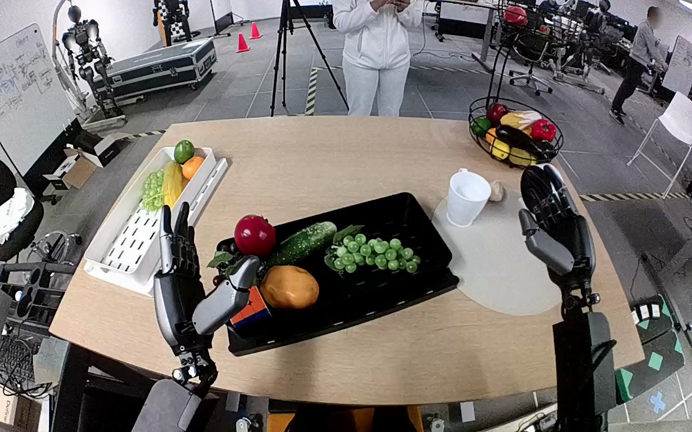

NVIDIA GR1 · 10
Video 10

Annotation
From the dedicated visual review of this video (humanoid_action_v1). Plain text · JSON
Observed outcome
At source frame 119 the right hand is open above the white mat. The grape bunch is detached and visibly descending below the hand, with motion blur; its stable resting position and mat contact are not shown. The source tray no longer contains that bunch, and the left hand remains open near the tray.
Hand roles
- Right
Only manipulating hand: closes thumb and fingers around the green grape bunch, lifts and transports it from the black tray to above the white mat, then opens and releases it.
- Left
Remains open near the near-left edge of the black tray; slight pose changes occur but it does not touch, support, receive, or manipulate the bunch.
- Coordination
Single right-hand execution, with no two-hand coordination, hand-to-hand transfer, or interaction with a person.
Robot-side evidence
- Confidence
high
- Evidence
The camera looks forward over the robot own forearms, whose proximal sections emerge from the lower left and lower right of the view. The image-right forearm is on the robot right in this forward view; its thumb is on its inward/image-left side. The paired image-left hand has the mirrored inward thumb position. This body-relative forearm arrangement identifies the active hand as anatomical right, independently corroborating the source instruction.
Chronology
| Frames | Observation |
|---|---|
| 0–23 | Both hands are initially raised open; the right hand starts its reach toward the grape bunch while the left remains clear of the tray. |
| 24–59 | The right arm swings inward and lowers its open hand over the green grape bunch in the black tray. The left hand stays open near the near-left tray edge without manipulating anything. |
| 60–75 | Right thumb and fingers close around opposite sides of the bunch; the bunch tilts upward as the hand secures it. |
| 76–97 | The right hand lifts the entire bunch clear of the tray and transports it upward and to the robot right toward the white circular mat. The left hand remains unused; there is no transfer or coordinated support. |
| 98–113 | The right arm positions the held bunch above the right portion of the white mat, turning it downward and lowering slightly. |
| 114–119 | Right fingers open; the grape bunch separates and drops beneath the hand. Frames 118 and 119 show it descending above the mat. No settled contact, post-placement adjustment, or withdrawal is visible before the clip ends. |
Differences from the publisher annotation
- The original instruction specifies moving grapes to the white mat; the observed clip shows the correct right-hand pickup and release above that destination but ends before the bunch is visibly resting on it.
Uncertainties
- The bunch is released above the mat, but the final frame precedes a visible settled landing; successful final placement cannot be confirmed.
Complete review record action_review.json
{
"prompt_protocol": "humanoid_action_v1",
"prompt_provenance": "visually_authored_from_video_and_initial_frame",
"reviewed_contact_sheets": [
"sheet_001.jpg"
],
"inspected_frame_stride": 2,
"inspected_sampled_frame_count": 60,
"initial_scene": "Forward-looking robot perspective over a table. Both forearms enter the lower image with open dexterous hands; the green grape bunch lies on the right half of the central black tray. The white circular mat lies to the robot right with a white cup near its far edge. Other produce remains on the black tray and white side tray.",
"observed_sequence": [
{
"start_frame": 0,
"end_frame": 23,
"action": "Both hands are initially raised open; the right hand starts its reach toward the grape bunch while the left remains clear of the tray.",
"confidence": "high"
},
{
"start_frame": 24,
"end_frame": 59,
"action": "The right arm swings inward and lowers its open hand over the green grape bunch in the black tray. The left hand stays open near the near-left tray edge without manipulating anything.",
"confidence": "high"
},
{
"start_frame": 60,
"end_frame": 75,
"action": "Right thumb and fingers close around opposite sides of the bunch; the bunch tilts upward as the hand secures it.",
"confidence": "high"
},
{
"start_frame": 76,
"end_frame": 97,
"action": "The right hand lifts the entire bunch clear of the tray and transports it upward and to the robot right toward the white circular mat. The left hand remains unused; there is no transfer or coordinated support.",
"confidence": "high"
},
{
"start_frame": 98,
"end_frame": 113,
"action": "The right arm positions the held bunch above the right portion of the white mat, turning it downward and lowering slightly.",
"confidence": "high"
},
{
"start_frame": 114,
"end_frame": 119,
"action": "Right fingers open; the grape bunch separates and drops beneath the hand. Frames 118 and 119 show it descending above the mat. No settled contact, post-placement adjustment, or withdrawal is visible before the clip ends.",
"confidence": "high"
}
],
"arm_hand_roles": {
"right": "Only manipulating hand: closes thumb and fingers around the green grape bunch, lifts and transports it from the black tray to above the white mat, then opens and releases it.",
"left": "Remains open near the near-left edge of the black tray; slight pose changes occur but it does not touch, support, receive, or manipulate the bunch.",
"coordination": "Single right-hand execution, with no two-hand coordination, hand-to-hand transfer, or interaction with a person."
},
"anatomical_side_evidence": {
"confidence": "high",
"evidence": "The camera looks forward over the robot own forearms, whose proximal sections emerge from the lower left and lower right of the view. The image-right forearm is on the robot right in this forward view; its thumb is on its inward/image-left side. The paired image-left hand has the mirrored inward thumb position. This body-relative forearm arrangement identifies the active hand as anatomical right, independently corroborating the source instruction."
},
"terminal_state": "At source frame 119 the right hand is open above the white mat. The grape bunch is detached and visibly descending below the hand, with motion blur; its stable resting position and mat contact are not shown. The source tray no longer contains that bunch, and the left hand remains open near the tray.",
"uncertainties": [
"The bunch is released above the mat, but the final frame precedes a visible settled landing; successful final placement cannot be confirmed."
],
"annotation_discrepancies": [
"The original instruction specifies moving grapes to the white mat; the observed clip shows the correct right-hand pickup and release above that destination but ends before the bunch is visibly resting on it."
],
"evidence_frame_indices": [
0,
56,
70,
78,
84,
98,
110,
114,
116,
117,
118,
119
],
"selected_execution_status": "incomplete",
"inspection_coverage": "Visually inspected the complete 60-sample sheet covering frames 0–118 at stride 2, native source PNG, and 12 native decoded frames spanning approach, grasp, lift, transport, release and the final frame.",
"video_id": "10",
"dataset": "NVIDIA_GR1_100",
"dedicated_review_agent": "review_gr1_10",
"review_source_video": "NVIDIA_GR1_100/10/original/original.mp4",
"source_frame_count": 120,
"source_fps": 20.0,
"native_detail_frames": [
0,
56,
70,
78,
84,
98,
110,
114,
116,
117,
118,
119
],
"world_model_prompt": "The robot closes its right hand around the bunch of green grapes in the central black tray and lifts it clear. It carries the bunch to the white circular mat on its right, opens its fingers, and releases the grapes above the mat. The grapes descend beneath its open right hand toward the mat. Keep the camera fixed; preserve robot geometry, physically valid joint motion, and normal gripper opening and closing.",
"original_task_instruction": "Use the right hand to pick up green grapes from black tray at the center of the table to white circular mat at the right side of the table.",
"selected_segment": {
"start_frame": 0,
"end_frame_exclusive": 120,
"reason": "Complete original single-task reference; no cropping or trimming requested."
},
"source_video_sha256": "d2a9e981656c315921bbb32ca8b1d9370da9007c96ce8073b0b4ead3bd9a8a3f",
"review_completed_at": "2026-10-13T17:42:50.890160+00:00"
}